Syllabus Topics
- 5.1 Difference between maintenance and rehabilitation
- 5.2 Classification of road maintenance
- 5.3 Causes of flexible and rigid pavement failure
- 5.4 Maintenance of low cost roads (Earthen, gravel and WBM roads)
- 5.5 Maintenance of flexible pavement and rigid pavement
- 5.6 Pavement evaluation method
- 5.7 Overlay and its types
- 5.8 IRC method of overlay design for flexible pavement
- 5.9 Concept of performance based maintenance
5.1 Difference between maintenance and rehabilitation2080207920762075
Past Exam Questions on this Topic
- Describe the term maintenance, rehabilitation and reconstruction. Describe the typical types of rigid pavement failure with sketches where possible. [8] (2080 Bhadra, Q9)
Solution
(a) Maintenance, rehabilitation and reconstruction
Term Meaning Typical works Maintenance Work carried out to preserve a pavement in its serviceable condition and to keep it as near as practicable to its original state. It does not add structural strength. Pot-hole patching, crack sealing, surface/seal coats, shoulder and drain cleaning, restoring camber, snow/silt removal Rehabilitation Major work that restores and increases the structural strength and riding quality of a pavement that has deteriorated but is not beyond repair. Strengthening overlays, recycling of the existing layers, partial or full-depth reconstruction of the surfacing, drainage improvement Reconstruction Complete removal of the existing pavement and rebuilding of all the layers when the pavement has failed structurally and rehabilitation is no longer economical. Removal of the old crust, re-preparation of the subgrade and construction of a new pavement On the pavement-condition-versus-time curve, maintenance keeps the condition in the "good" band, rehabilitation lifts a "fair/poor" pavement back up, and reconstruction is required once the pavement has reached the "fail" level.
(b) Typical types of rigid pavement failure
Typical failures of rigid pavement
Failure Description and cause Scaling of cement concrete Deterioration and flaking of the concrete surface exposing the aggregate — poor quality concrete, over-finishing, freeze-thaw, de-icing salts Shrinkage / plastic cracks Fine cracks formed soon after laying due to shrinkage during setting and curing Spalling of joints Break-up of the concrete along the joint edges — incompressible material in the joint, weak concrete at the joint, poor joint sealing Warping / corner cracks Cracks near the corner caused by the combination of load and warping stresses when the slab curls Structural (transverse/longitudinal) cracking Fatigue under repeated load and temperature stress; inadequate slab thickness or joint spacing Mud pumping Ejection of the fine subgrade material with water through joints and cracks under repeated loading; the slab progressively loses support and faulting follows Faulting / settlement Difference in elevation across a joint due to pumping, erosion of the sub-base or loss of load transfer Polished aggregate Loss of skid resistance where the aggregate has no rough or angular particles left Lecture 24 §5.1 and §5.3; Manual.pdf Ch.4 §4.1 and §4.4, book pp.231-239.
- What are the most common failures of flexible pavement? Describe the deflection approach for the design of overlay for flexible pavement. [8] (2079 Bhadra, Q9)
Solution
(a) Most common failures of flexible pavement
Common failures of flexible pavement, their causes and remedies
Failure Description & cause Remedy Alligator (map) cracking A series of interconnected cracks. Cause: fatigue under repeated loading, localised weakness in the base course, poor drainage Structural failure — the only solution is a full-depth patch Rutting Channelised depressions along the wheel path. Cause: consolidation and lateral movement of any pavement layer, insufficient thickness, inadequate compaction Overlay for minor rutting; full-depth removal and replacement for severe rutting Longitudinal cracking Cracks parallel to the centre line. Cause: moisture infiltration, differential volume change, frost action, poor joint construction Crack < 12 mm — seal; severe — remove the cracked layer and overlay Reflection cracking Cracks in a flexible overlay directly over the joints/cracks of the old rigid pavement. Cause: movement of the underlying slab from thermal and moisture change Seal cracks < 12 mm; otherwise remove the cracked layer and overlay (with a stress-absorbing membrane) Pot-holes Bowl-shaped holes penetrating up to the base course. Cause: moisture infiltration, and the end result of untreated alligator cracking Full-depth replacement patch Corrugation and shoving Transverse ripples / a bulge of the surface. Cause: unstable mix (excess binder or fines), lack of aggregate interlock, braking and accelerating traffic Remove and replace the unstable surfacing; scarify and relay Ravelling / stripping Progressive loss of aggregate from the surface. Cause: insufficient binder, poor adhesion (stripping in the presence of water), laying in cold or wet weather Fog seal / surface dressing; remove and relay if deep Bleeding A film of binder on the surface. Cause: excess bitumen in the mix or in the prime/tack coat, low air voids, high temperature Blot with hot sand/aggregate and roll; for severe cases remove the surfacing Slippage cracking Crescent-shaped cracks. Cause: the surfacing is not bonded to the layer below (missing/poor tack coat) or a low-strength surface mix Remove the affected area and relay with a proper tack coat Edge cracking / failure Cracks and break-up near the pavement edge. Cause: lack of lateral support from the shoulder, poor edge drainage Repair the shoulder, provide edge drainage, seal the crack or patch Polished aggregate Loss of surface texture and skid resistance. Cause: soft aggregate polished by traffic Surface dressing or a thin friction course General causes can be grouped as: (i) failure of the subgrade — inadequate stability, excessive moisture, excessive stress, poor compaction; (ii) failure of the base or sub-base — inadequate stability or strength, loss of binding action, loss of base material, inferior materials, lack of lateral confinement; and (iii) failure of the wearing course — improper mix design, poor quality control, volatilisation and oxidation of the bitumen.
(b) Deflection approach for the design of an overlay
Deflection (Benkelman beam) approach of overlay design — IRC:81
- Principle. The structural strength of an existing flexible pavement is judged from the rebound deflection of its surface under a standard rear axle of 8.2 t (dual wheels, 5.6 kg/cm² tyre pressure). A larger deflection means a weaker pavement/subgrade; the overlay must be thick enough to bring the deflection down to a tolerable value.
- Field measurement. The Benkelman beam probe is inserted between the dual wheels; the initial dial reading D0 is taken, the truck is driven forward 2.7 m (intermediate reading Di) and then 9 m away (final reading Df). At least 10 points per section per lane, with a minimum of 20 points per km. If the highest or lowest value differs from the mean by more than one-third of the mean, extra readings are taken 25 m either side.
- Rebound deflection of each point (readings in divisions of 0.01 mm):if (Di − Df) ≤ 0.025 mm : D = 2(D0 − Df) × 0.01 mm if (Di − Df) > 0.025 mm : D = [2(D0 − Df) + 2×2.91(Di − Df)] × 0.01 mm
- Other data — pavement temperature at hourly intervals, field moisture content of the subgrade, subgrade soil classification, average annual rainfall, traffic volume, growth rate and axle-load (VDF) data.
- Characteristic deflection Dc = D̄ + s for roads with fewer than 1500 commercial vehicles per day, and D̄ + 2s for National and State Highways (D̄ = mean, s = standard deviation of the individual deflections).
- Corrections — (a) temperature: +0.01 mm per °C when the pavement temperature during the test is below 35°C and −0.01 mm per °C when it is above 35°C; (b) seasonal / moisture: a correction factor depending on the subgrade soil type (sandy-gravelly, clayey with PI < 15, clayey with PI > 15), the field moisture content at the time of the test and the average annual rainfall (< or > 1300 mm).
- Design traffic in million standard axles:Ns = 365 × A × [((1+r)ⁿ − 1)/r] × LDF × VDF
- Overlay thickness is read from the IRC:81 design chart (corrected characteristic deflection on the x-axis, cumulative standard axles as the family of curves) which gives the thickness of bituminous macadam. If other materials are used:1 cm BM ≡ 1.5 cm WBM / WMM / BUSG 1 cm BM ≡ 0.7 cm DBM / AC / SDBC
Lecture 24 §5.3 and §5.8 (IRC:81); Manual.pdf Ch.4 §4.4 and §4.6.
- Differentiate between Repair and Rehabilitation [8] (2076 Ashwin, Q9)
Solution
Repair vs Rehabilitation
Repair (maintenance repair) Rehabilitation Object To correct a localised defect and restore the surface to a serviceable state To restore and increase the structural capacity and riding quality of the whole section Extent Small, spot works Section-wide (usually km lengths) Typical works Pot-hole patching, crack sealing, edge repair, blotting of bleeding, restoring camber Strengthening overlay designed by the Benkelman-beam method, recycling, removal and replacement of the surfacing, drainage improvement Effect on strength None — it does not add structural strength Adds structural strength and extends the design life Planning Routine / recurrent, from the maintenance budget Periodic, needs pavement evaluation, design and a capital budget When used While the pavement condition is still good/fair When the condition has fallen to fair/poor but the pavement is not yet beyond repair (otherwise reconstruction) Term Meaning Typical works Maintenance Work carried out to preserve a pavement in its serviceable condition and to keep it as near as practicable to its original state. It does not add structural strength. Pot-hole patching, crack sealing, surface/seal coats, shoulder and drain cleaning, restoring camber, snow/silt removal Rehabilitation Major work that restores and increases the structural strength and riding quality of a pavement that has deteriorated but is not beyond repair. Strengthening overlays, recycling of the existing layers, partial or full-depth reconstruction of the surfacing, drainage improvement Reconstruction Complete removal of the existing pavement and rebuilding of all the layers when the pavement has failed structurally and rehabilitation is no longer economical. Removal of the old crust, re-preparation of the subgrade and construction of a new pavement On the pavement-condition-versus-time curve, maintenance keeps the condition in the "good" band, rehabilitation lifts a "fair/poor" pavement back up, and reconstruction is required once the pavement has reached the "fail" level.
Lecture 24 §5.1; Manual.pdf Ch.4 §4.1, book p.231.
- Describe briefly maintenance, rehabilitation and reconstruction. Describe the methods of pavement evaluation. (2075 Ashwin, Q9)
Solution
(a) Maintenance, rehabilitation and reconstruction
Term Meaning Typical works Maintenance Work carried out to preserve a pavement in its serviceable condition and to keep it as near as practicable to its original state. It does not add structural strength. Pot-hole patching, crack sealing, surface/seal coats, shoulder and drain cleaning, restoring camber, snow/silt removal Rehabilitation Major work that restores and increases the structural strength and riding quality of a pavement that has deteriorated but is not beyond repair. Strengthening overlays, recycling of the existing layers, partial or full-depth reconstruction of the surfacing, drainage improvement Reconstruction Complete removal of the existing pavement and rebuilding of all the layers when the pavement has failed structurally and rehabilitation is no longer economical. Removal of the old crust, re-preparation of the subgrade and construction of a new pavement On the pavement-condition-versus-time curve, maintenance keeps the condition in the "good" band, rehabilitation lifts a "fair/poor" pavement back up, and reconstruction is required once the pavement has reached the "fail" level.
(b) Methods of pavement evaluation
Pavement evaluation = assessing the existing condition of a pavement so that maintenance and strengthening works can be planned in time. It covers the subgrade support, the pavement composition and thickness, the present traffic loading and the environment, and is carried out in two ways:
1. Structural evaluation — is the pavement structurally capable of carrying the design traffic?
- Measured through surface deflection (Benkelman beam under a standard 8.2 t axle, falling weight deflectometer), and through stresses/strains at critical points.
- Layer thicknesses (test pits) and material properties (CBR, resilient modulus) are also determined.
- The measured deflection is used directly to design the strengthening overlay.
2. Functional (surface condition) evaluation — is the ride quality acceptable?
- Present Serviceability Index (PSI) — AASHTO index (0-5) from measured roughness, rut depth, cracking and patching.
- Surface Distress Index (SDI) — a 6-level rating (0 = no visible defect, 5 = maximum defects) obtained from a visual distress survey; used to plan periodic maintenance.
- International Roughness Index (IRI) — measured with a profilometer / bump integrator; quantifies the irregularity of the longitudinal profile.
- Skid resistance — portable skid-resistance tester, sand-patch texture depth.
Lecture 24 §5.1 and §5.6; Manual.pdf Ch.4 §4.1 and §4.3.
Highway Maintenance & Rehabilitation
- Highway Maintenance is preserving and keeping the serviceable conditions of highway as normal as possible and as best as practicable. e.g. sealing of cracks, filling pot holes etc.
- Highway Rehabilitation is improving the structural strength of the pavement. e.g. overlay, replacement of surfacing etc.
Concept of Pavement maintenance
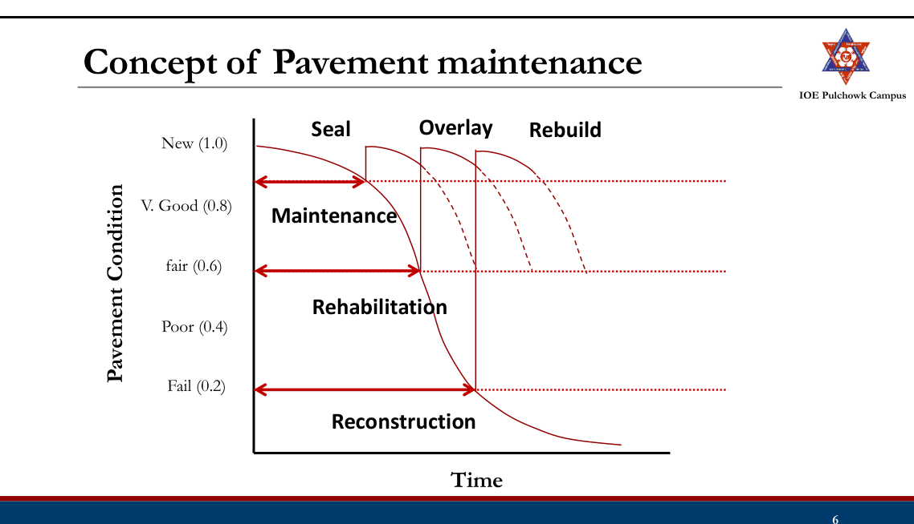
5.2 Classification of road maintenance2078
Past Exam Questions on this Topic
- Describe pavement maintenance and its types with examples. [8] (2078 Bhadra, Q4)
Solution
Pavement maintenance is the work carried out on a pavement to keep it in a serviceable condition as near as practicable to its original state, so that traffic can move safely, comfortably and economically, and so that the asset is preserved and the deterioration curve is flattened.
Classification of road maintenance activities
Type Frequency / when Examples Routine maintenance Continuous / throughout the year, small localised works Cleaning of side drains, culverts and catch pits; cutting grass and bushes; repair of road furniture and signs; minor pot-hole patching; crack sealing Recurrent maintenance Several times a year, depending on traffic and rainfall Grading/reshaping of gravel and earthen surfaces, restoring camber, gravel re-spreading, vegetation control, minor slips Periodic maintenance At intervals of several years, planned and budgeted Resealing, surface dressing, fog/slurry seal, regravelling, thin overlays, renewal of markings Emergency (special) maintenance Unpredictable — after a natural event Clearing landslides and debris, repair of washed-out sections, flood/earthquake damage, restoring cut lines Road-side maintenance Along with the above Shoulders, side slopes, bio-engineering works, drainage structures and road furniture Why it matters: timely routine and periodic maintenance costs only a small fraction of the cost of rehabilitation or reconstruction; once a pavement is allowed to fall into the "poor" band the repair cost rises very steeply.
Lecture 24 §5.2 (classification of road maintenance); Manual.pdf Ch.4 §4.1, book p.231.
Classification of Maintenance Activities
Highway maintenance can be classified as:
- Road Maintenance
- Roadside Maintenance
Road Maintenance
- All maintenance works on the road way
- Maintenance of all structures within road way (e.g. side ditches, culverts, causeways, bridges etc.)
- Types:
- Routine Maintenance
- Recurrent Maintenance
- Periodic Maintenance
- Emergency Maintenance
Road Maintenance: Routine Maintenance
- Maintenance operations of localize nature
- Require continually on any road regardless of its engineering characteristics or traffic volume
- Grass and bush cutting, tree pruning
- Grading and reshaping of unpaved shoulders,
- Clearing and cleaning of ditches and culverts,
- Road sign, marking, lighting maintenance etc.
- Winter maintenance (clearance of snow, ice)
Road Maintenance: Recurrent Maintenance
- Maintenance operation of localized nature carried out at more or less regular interval of six months to two years with a frequency that depends on the traffic volume.
- To be done by using minor equipment
- Sealing cracks,
- Local surface treatment,
- Repair of depressions, holes and ruts, pot hole patching etc.
Road Maintenance: Periodic Maintenance
- Maintenance operations of large extent required only at intervals of several years.
- Frequency and type depend on the original surfacing, traffic, rainfall and climatic conditions
- Resealing (surface treatment, slurry seal, thin overlay),
- Re-gravelling of unpaved road
- Restoration of road marking, drainage items etc.
Road Maintenance: Emergency Maintenance
- Urgent emergency maintenance works needed for reopening of the road after slides, road wash outs etc.
- Removal of debris or any other obstacles
- Reinstatement of the pavement structures and drainage after rainy season
- Strengthening/reconstruction of pavement
- Protect road against falls of rock, flooding etc.
Road Side Maintenance
- Concerns all maintenance works on structures and surface above and below the road having direct active and/or passive influence on the road. E.g. maintenance of culverts protection works, retaining walls, cut slopes, fill slopes, unstable natural slopes, river protection works and vegetation structures.
5.3 Causes of flexible and rigid pavement failure2082207520742071
Past Exam Questions on this Topic
- Explain the failure of flexible pavement with cause and remedies. [8] (2082 Baishakh, Q9)
Solution
Common failures of flexible pavement, their causes and remedies
Failure Description & cause Remedy Alligator (map) cracking A series of interconnected cracks. Cause: fatigue under repeated loading, localised weakness in the base course, poor drainage Structural failure — the only solution is a full-depth patch Rutting Channelised depressions along the wheel path. Cause: consolidation and lateral movement of any pavement layer, insufficient thickness, inadequate compaction Overlay for minor rutting; full-depth removal and replacement for severe rutting Longitudinal cracking Cracks parallel to the centre line. Cause: moisture infiltration, differential volume change, frost action, poor joint construction Crack < 12 mm — seal; severe — remove the cracked layer and overlay Reflection cracking Cracks in a flexible overlay directly over the joints/cracks of the old rigid pavement. Cause: movement of the underlying slab from thermal and moisture change Seal cracks < 12 mm; otherwise remove the cracked layer and overlay (with a stress-absorbing membrane) Pot-holes Bowl-shaped holes penetrating up to the base course. Cause: moisture infiltration, and the end result of untreated alligator cracking Full-depth replacement patch Corrugation and shoving Transverse ripples / a bulge of the surface. Cause: unstable mix (excess binder or fines), lack of aggregate interlock, braking and accelerating traffic Remove and replace the unstable surfacing; scarify and relay Ravelling / stripping Progressive loss of aggregate from the surface. Cause: insufficient binder, poor adhesion (stripping in the presence of water), laying in cold or wet weather Fog seal / surface dressing; remove and relay if deep Bleeding A film of binder on the surface. Cause: excess bitumen in the mix or in the prime/tack coat, low air voids, high temperature Blot with hot sand/aggregate and roll; for severe cases remove the surfacing Slippage cracking Crescent-shaped cracks. Cause: the surfacing is not bonded to the layer below (missing/poor tack coat) or a low-strength surface mix Remove the affected area and relay with a proper tack coat Edge cracking / failure Cracks and break-up near the pavement edge. Cause: lack of lateral support from the shoulder, poor edge drainage Repair the shoulder, provide edge drainage, seal the crack or patch Polished aggregate Loss of surface texture and skid resistance. Cause: soft aggregate polished by traffic Surface dressing or a thin friction course General causes can be grouped as: (i) failure of the subgrade — inadequate stability, excessive moisture, excessive stress, poor compaction; (ii) failure of the base or sub-base — inadequate stability or strength, loss of binding action, loss of base material, inferior materials, lack of lateral confinement; and (iii) failure of the wearing course — improper mix design, poor quality control, volatilisation and oxidation of the bitumen.
Lecture 24 §5.3 (typical flexible pavement failures); Manual.pdf Ch.4 §4.4, book pp.233-239.
- Explain the maintenance of bituminous surfaces Describe the typical types of rigid pavement failures (2075 Chaitra, Q9)
Solution
(a) Maintenance of bituminous surfaces
Maintenance of bituminous surfaces
- Pot-hole patching — mark a rectangular area around the pot-hole, cut vertical faces to the full depth of the defective material, clean and dry the hole, apply a tack coat to the sides and bottom, fill with premix in layers and compact each layer, finishing slightly proud of the surface.
- Crack sealing / filling — clean the crack with compressed air, fill fine cracks with a fog spray or emulsion slurry, and wide cracks with a hot sealant, then blind with sand.
- Repair of ruts, corrugations and shoving — scarify or cold-mill the unstable surfacing, apply a tack coat, fill with a stable premix and roll; slight ruts may be filled with a levelling course followed by a seal.
- Surface / seal coat, sand seal, slurry seal, fog seal — periodic treatments that waterproof a dry, ravelled or cracked surface and restore skid resistance.
- Treating bleeding — blot the excess binder with hot sand or fine aggregate and roll; remove the surfacing where the bleeding is severe.
- Edge repair and shoulder maintenance — make up the shoulder to the pavement level to restore lateral support and drainage.
- Overlay — when the whole section is structurally deficient (see the Benkelman-beam deflection design).
(b) Typical types of rigid pavement failure
Typical failures of rigid pavement
Failure Description and cause Scaling of cement concrete Deterioration and flaking of the concrete surface exposing the aggregate — poor quality concrete, over-finishing, freeze-thaw, de-icing salts Shrinkage / plastic cracks Fine cracks formed soon after laying due to shrinkage during setting and curing Spalling of joints Break-up of the concrete along the joint edges — incompressible material in the joint, weak concrete at the joint, poor joint sealing Warping / corner cracks Cracks near the corner caused by the combination of load and warping stresses when the slab curls Structural (transverse/longitudinal) cracking Fatigue under repeated load and temperature stress; inadequate slab thickness or joint spacing Mud pumping Ejection of the fine subgrade material with water through joints and cracks under repeated loading; the slab progressively loses support and faulting follows Faulting / settlement Difference in elevation across a joint due to pumping, erosion of the sub-base or loss of load transfer Polished aggregate Loss of skid resistance where the aggregate has no rough or angular particles left Lecture 24 §5.5 and §5.3; Manual.pdf Ch.4 §4.5, book p.239.
- What is highway maintenance? Explain the general causes of pavement failures (2074 Ashwin, Q9)
Solution
(a) Highway maintenance — the set of operations carried out to preserve a highway and its structures in their serviceable condition, as near as practicable to the state in which they were built, so that traffic can move safely and economically. It covers the carriageway, shoulders, drainage, structures, road furniture and the road side, and is classified as routine, recurrent, periodic, emergency and road-side maintenance.
Classification of road maintenance activities
Type Frequency / when Examples Routine maintenance Continuous / throughout the year, small localised works Cleaning of side drains, culverts and catch pits; cutting grass and bushes; repair of road furniture and signs; minor pot-hole patching; crack sealing Recurrent maintenance Several times a year, depending on traffic and rainfall Grading/reshaping of gravel and earthen surfaces, restoring camber, gravel re-spreading, vegetation control, minor slips Periodic maintenance At intervals of several years, planned and budgeted Resealing, surface dressing, fog/slurry seal, regravelling, thin overlays, renewal of markings Emergency (special) maintenance Unpredictable — after a natural event Clearing landslides and debris, repair of washed-out sections, flood/earthquake damage, restoring cut lines Road-side maintenance Along with the above Shoulders, side slopes, bio-engineering works, drainage structures and road furniture (b) General causes of pavement failure
- Failure of the subgrade — inadequate stability, excessive moisture (poor drainage), excessive stress from overloading, and inadequate compaction. It shows up as undulations, rutting and depressions.
- Failure of the base / sub-base — inadequate stability or strength, loss of binding action, loss of base-course material, use of inferior materials or poor quality control, and lack of lateral confinement. It shows up as alligator cracking, pot-holes and settlement.
- Failure of the wearing course — improper mix design (excess or deficient binder), inadequate quality control during construction, and volatilisation and oxidation (ageing) of the bitumen. It shows up as ravelling, bleeding, stripping, cracking and loss of texture.
- Other causes — poor drainage, traffic overloading beyond the design axle load, environmental effects (temperature, frost, rainfall) and delayed maintenance.
Common failures of flexible pavement, their causes and remedies
Failure Description & cause Remedy Alligator (map) cracking A series of interconnected cracks. Cause: fatigue under repeated loading, localised weakness in the base course, poor drainage Structural failure — the only solution is a full-depth patch Rutting Channelised depressions along the wheel path. Cause: consolidation and lateral movement of any pavement layer, insufficient thickness, inadequate compaction Overlay for minor rutting; full-depth removal and replacement for severe rutting Longitudinal cracking Cracks parallel to the centre line. Cause: moisture infiltration, differential volume change, frost action, poor joint construction Crack < 12 mm — seal; severe — remove the cracked layer and overlay Reflection cracking Cracks in a flexible overlay directly over the joints/cracks of the old rigid pavement. Cause: movement of the underlying slab from thermal and moisture change Seal cracks < 12 mm; otherwise remove the cracked layer and overlay (with a stress-absorbing membrane) Pot-holes Bowl-shaped holes penetrating up to the base course. Cause: moisture infiltration, and the end result of untreated alligator cracking Full-depth replacement patch Corrugation and shoving Transverse ripples / a bulge of the surface. Cause: unstable mix (excess binder or fines), lack of aggregate interlock, braking and accelerating traffic Remove and replace the unstable surfacing; scarify and relay Ravelling / stripping Progressive loss of aggregate from the surface. Cause: insufficient binder, poor adhesion (stripping in the presence of water), laying in cold or wet weather Fog seal / surface dressing; remove and relay if deep Bleeding A film of binder on the surface. Cause: excess bitumen in the mix or in the prime/tack coat, low air voids, high temperature Blot with hot sand/aggregate and roll; for severe cases remove the surfacing Slippage cracking Crescent-shaped cracks. Cause: the surfacing is not bonded to the layer below (missing/poor tack coat) or a low-strength surface mix Remove the affected area and relay with a proper tack coat Edge cracking / failure Cracks and break-up near the pavement edge. Cause: lack of lateral support from the shoulder, poor edge drainage Repair the shoulder, provide edge drainage, seal the crack or patch Polished aggregate Loss of surface texture and skid resistance. Cause: soft aggregate polished by traffic Surface dressing or a thin friction course General causes can be grouped as: (i) failure of the subgrade — inadequate stability, excessive moisture, excessive stress, poor compaction; (ii) failure of the base or sub-base — inadequate stability or strength, loss of binding action, loss of base material, inferior materials, lack of lateral confinement; and (iii) failure of the wearing course — improper mix design, poor quality control, volatilisation and oxidation of the bitumen.
Lecture 24 §5.2 and §5.3; Manual.pdf Ch.4 §4.4, book pp.233-239.
- Define road maintenance. Describe the failures of flexible pavement. (2071 Chaitra, Q9)
Solution
(a) Road maintenance (definition) — the continuous and periodic work done on a road to keep it in a serviceable condition, i.e. to preserve the pavement, shoulders, drainage, structures and furniture as near as practicable to their as-built state, so that traffic moves safely and economically and the design life is achieved. It is classified as routine, recurrent, periodic, emergency and road-side maintenance.
(b) Failures of flexible pavement
Common failures of flexible pavement, their causes and remedies
Failure Description & cause Remedy Alligator (map) cracking A series of interconnected cracks. Cause: fatigue under repeated loading, localised weakness in the base course, poor drainage Structural failure — the only solution is a full-depth patch Rutting Channelised depressions along the wheel path. Cause: consolidation and lateral movement of any pavement layer, insufficient thickness, inadequate compaction Overlay for minor rutting; full-depth removal and replacement for severe rutting Longitudinal cracking Cracks parallel to the centre line. Cause: moisture infiltration, differential volume change, frost action, poor joint construction Crack < 12 mm — seal; severe — remove the cracked layer and overlay Reflection cracking Cracks in a flexible overlay directly over the joints/cracks of the old rigid pavement. Cause: movement of the underlying slab from thermal and moisture change Seal cracks < 12 mm; otherwise remove the cracked layer and overlay (with a stress-absorbing membrane) Pot-holes Bowl-shaped holes penetrating up to the base course. Cause: moisture infiltration, and the end result of untreated alligator cracking Full-depth replacement patch Corrugation and shoving Transverse ripples / a bulge of the surface. Cause: unstable mix (excess binder or fines), lack of aggregate interlock, braking and accelerating traffic Remove and replace the unstable surfacing; scarify and relay Ravelling / stripping Progressive loss of aggregate from the surface. Cause: insufficient binder, poor adhesion (stripping in the presence of water), laying in cold or wet weather Fog seal / surface dressing; remove and relay if deep Bleeding A film of binder on the surface. Cause: excess bitumen in the mix or in the prime/tack coat, low air voids, high temperature Blot with hot sand/aggregate and roll; for severe cases remove the surfacing Slippage cracking Crescent-shaped cracks. Cause: the surfacing is not bonded to the layer below (missing/poor tack coat) or a low-strength surface mix Remove the affected area and relay with a proper tack coat Edge cracking / failure Cracks and break-up near the pavement edge. Cause: lack of lateral support from the shoulder, poor edge drainage Repair the shoulder, provide edge drainage, seal the crack or patch Polished aggregate Loss of surface texture and skid resistance. Cause: soft aggregate polished by traffic Surface dressing or a thin friction course General causes can be grouped as: (i) failure of the subgrade — inadequate stability, excessive moisture, excessive stress, poor compaction; (ii) failure of the base or sub-base — inadequate stability or strength, loss of binding action, loss of base material, inferior materials, lack of lateral confinement; and (iii) failure of the wearing course — improper mix design, poor quality control, volatilisation and oxidation of the bitumen.
Lecture 24 §5.2 and §5.3; Manual.pdf Ch.4 §4.4.
Types of Road Failure and Its Causes
Road Failures:
- Failures in Flexible Pavements
- Failures in Rigid Pavements
Failures in Flexible Pavements
Flexible pavement failures in general appears as:
- Excessive deformation/settlements of any layer
- Excessive undulation or waves and corrugation
- Lateral shoving of the pavement near the edge along the wheel path
- Failure of Subgrade: Causes:
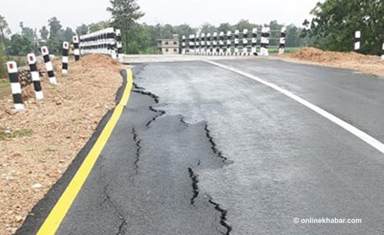
- Inadequate stability or strength
- Excessive stress application
- Inadequate compaction
- Failure of Subbase or Base: Causes:
- Inadequate stability or strengths
- Loss of binding action
- Loss of base course materials
- Inadequate wearing course
- Use of inferior materials or inadequate quality control
- Lack of lateral confinement for the granular base course
- Failure of Wearing Course: Causes:
- Improper mix design
- Inadequate quality control during construction
- Volatilization and oxidation of bitumen
Typical Flexible Pavement Failures
a) Alligator (Map) Cracking:
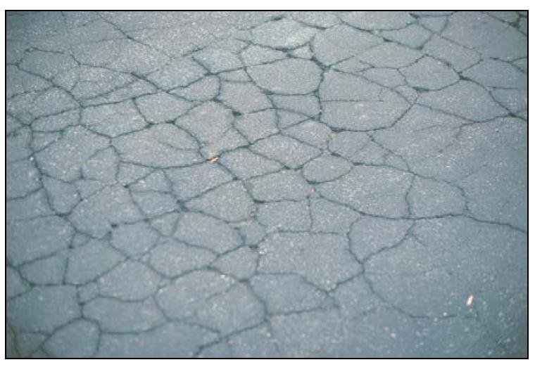
Cause: Fatigue, localize weakness in base course
Repair: Because a structural failure is taking place, the only possible solution is a full-depth patch
b) Rutting: Channelized depressions along the wheel-path
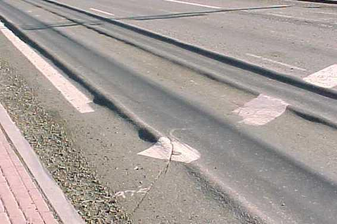
Causes: Due to consolidation, lateral movement of any pavement layer, insufficient pavement thickness and compaction
Repair: overlay for minor, full depth removal and replacement with suitable material for severe one
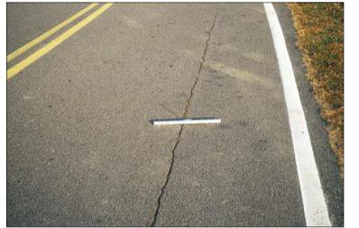
c) Longitudinal Cracking: Cracks parallel to the pavement’s centerline.
Causes: Moisture infiltration, differential volume change, frost action, and/or poor joint construction.
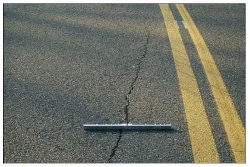
Repair: Crack <1/2 inch can be sealed, severe cracks - remove the cracked pavement layer and replace it with an overlay.
d) Reflection Cracking:
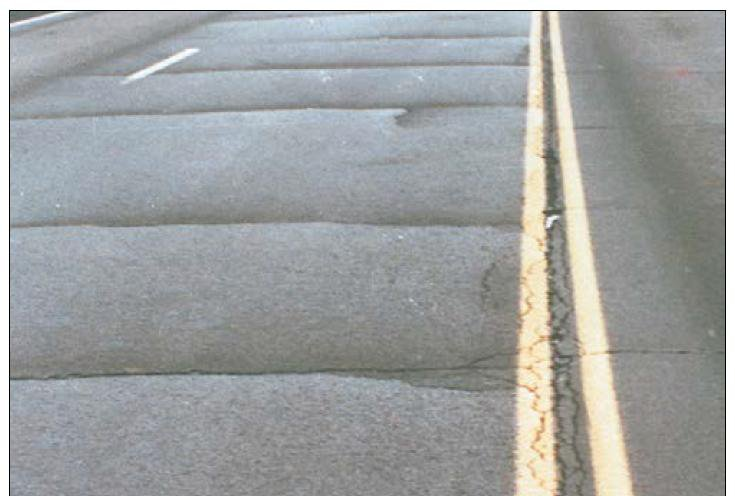
Observed in a flexible overlay over a rigid pavement. Occur directly over the underlying rigid pavement joints or over cracks in rigid pavement
Causes: Movement of the rigid pavement slab due to thermal and moisture changes.
Repair: Crack sealing for cracks less than 1/2 inch, and removal of the cracked pavement layer followed by an overlay for severe one
e) Pot Holes:
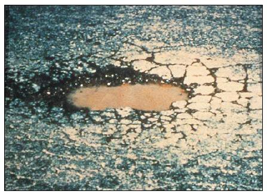
Small, bowl-shaped depressions in the pavement surface that penetrate up to the base course.
Causes: Moisture infiltration and usually the end result of untreated alligator cracking.
Repair: Full depth replacement patch
f) Corrugations (Ripples) and Shoving
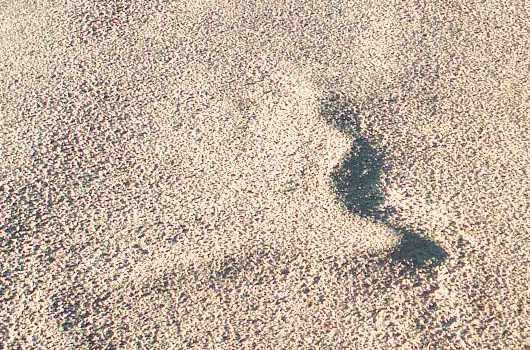
(Wave): Ripples or an abrupt wave across the pavement surface.
Cause: Usually by traffic action (braking and accelerating) combined with an unstable asphalt layer (excess/soft binder, poor compaction).
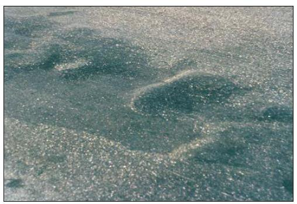
Repair: Small distortion – patching, large – overlay
g) Slippage Cracking Cause: Slipping occurs when the surface is not bound with the underlying layers or low strength surface mix. Slowly, it forms pot holes
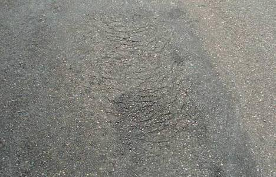
Repair: Removal and replacement of affected area.
h) Shear Failure
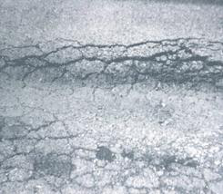
Upheaval of pavement followed with depressions.
Cause: Excessive loads causing a shear failure in the subgrade, base course, or the surface
Repair: Removal and replacement of affected area.
i) Raveling
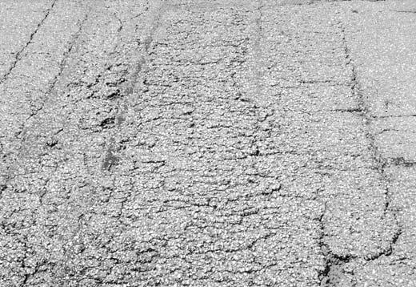
The separation of aggregate particles in a pavement. Usually, the fine aggregate wears away first. Soon larger particles are broken free.
Cause: Loss of bond between aggregate and bitumen
Repair: small raveling – patching, for large raveled area a thin hot-mix overlay
j) Frost Heaving
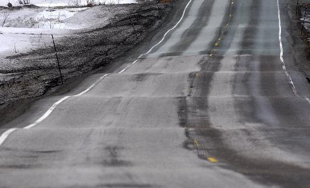
Localized heaving up of portion of pavement.
Cause: Frost action Repair: Small distortion – patching, large – overlay
k) Polished Aggregate Areas of pavement where the portion of aggregate extending above the asphalt binder is either very small or there are no rough or angular aggregate particles and have become smooth.
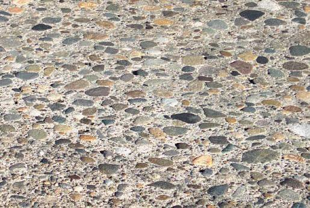
Cause: Abrasive action from repeated traffic applications, soft aggregate
Repair: Slurry seal or abrasion free overlay
Failures in Rigid Pavements
Formation of cracks is the main cause of failure. They fails mainly due to two factors:
- Deficiency of pavement material:
- Soft aggregate
- Poor workmanship in joints
- Poor joint filler and sealer material
- Poor surface finish
- Improper and insufficient curing
- Structural inadequacy of pavement:
- Inadequate pavement thickness
- Inadequate sub grade supports and poor sub grade soil
- Incorrect spacing of joints
Typical Rigid Pavement Failures
a) Scaling of Cement Concrete Deterioration and flaking of the concrete surface layer resulting exposure of aggregate.
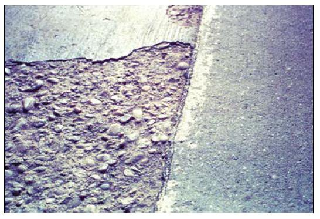
Cause: Poor-quality concrete mix, high water-cement ratio, excessive vibration, improper finishing. Excess water or overworking can bring water and cement paste to the surface resulting weak surface.
Repair: Cement mortar repair, or Bituminous patch.
b) Shrinkage Crack
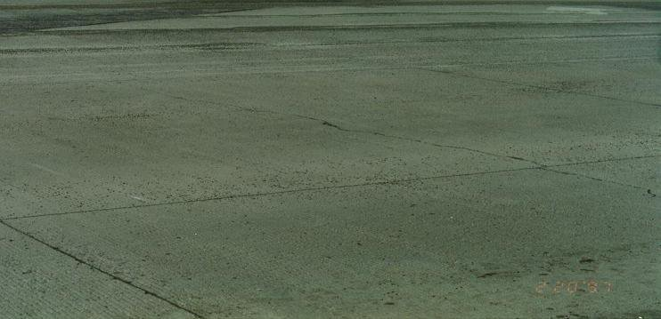
Hairline cracks formed during concrete setting and curing that are away from joints.
Cause: Inadequate reinforcement, improper or inadequate curing, high early age shrinkage
Repair: Moderate cracks are sealed, for severe cracks - slab replacement
c) Spalling of Joints
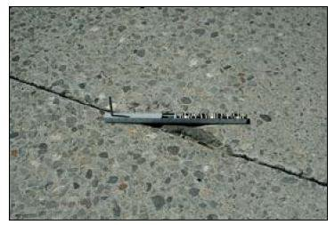
Breakdown of the slab edges, generally an indicator of advanced joint deterioration
Cause: Excessive stresses at the joint, low quality concrete, disintegration of the PCC from freeze-thaw
Repair: Partial or full depth patch
d) Warping Crack
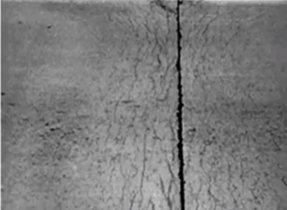
Cause: Excessing warping stresses, inadequate joint design or inadequate reinforcement.
Repair: Hinge joints are provided with adequate reinforcement
e) Corner Crack/Break
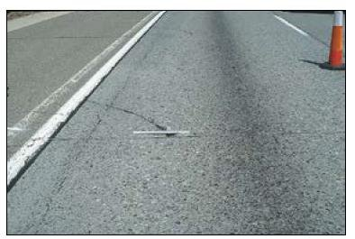
A crack that intersects the PCC slab joints near the corner.
Cause: Load repetitions combined with a loss of support, poor load transfer across the joint, curling stresses and warping stresses.
Repair: Full depth Patch
f) Mud Pumping Movement of material underneath the slab or ejection of material from underneath the slab. Due to repeated occurrence, slab losses subgrade support.
Cause: Water accumulation due to a high water table, poor drainage, and cracks or poor joint seals that allow water to infiltrate
Repair: Full depth patch to remove any deteriorated slab area & stabilize subgrade.
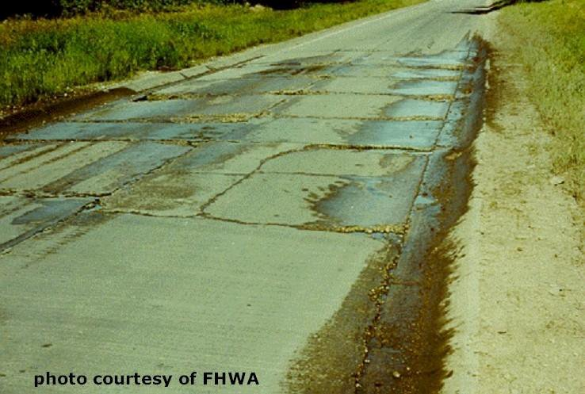
g) Pop Out
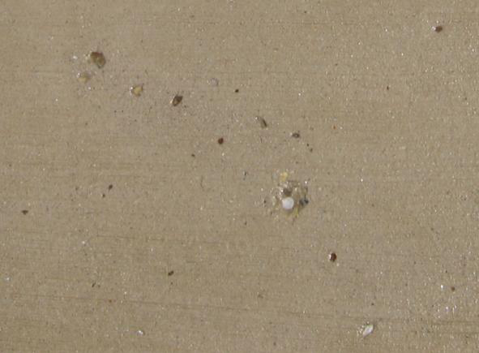
Causes : Use of non durable aggregates susceptible to freezing/expansion, internal pressure caused by expansion of the affected aggregate
Repair: Removal of loose concrete and patch
h) Blow out
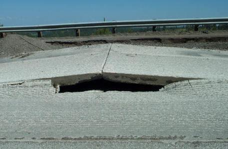
A localized upward slab movement and shattering at a joint or crack.
Cause: Insufficient room for slab expansion during hot weather
Repair: Full depth patch
i) Polished Aggregate Areas of pavement where there are no rough or angular aggregate particles, loss of skid resistance
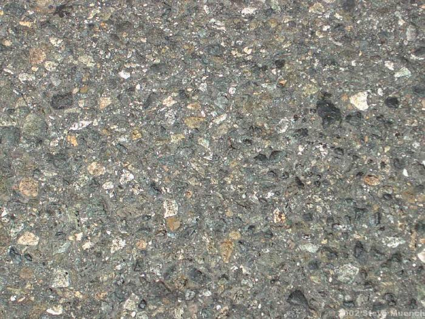
Cause: Due to abrasion of soft aggregates
Repair: Abrasion free overlay
j) Faulting Difference in elevation at a joint or crack.
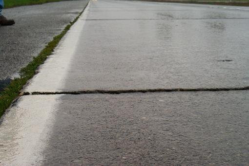
Cause: Settlement of pavement due to soft foundation, pumping or erosion of material, curling of slab edges due to temperature changes.
Repair: Dowel bar retrofit in an undoweled system, for severe- total reconstruction.
5.4 Maintenance of low cost roads (Earthen, gravel and WBM roads)
Maintenance of Earthen/Gravel Roads
- Common problems
- Formation of dust
- Formation of longitudinal/cross ruts along the surface
- Maintenance and Repair
- Maintained by sprinkling water, treatment with calcium chloride, applying oiled earth to prevent dust
- Periodic maintenance by spreading moist soil (gravel) along rut and reshaping of the camber or suitable stabilizing treatment is provided on surface
Maintenance of WBM Roads
- Common problems
- Dust formed in dry weather, mud in rain
- Pot holes and ruts
- Maintenance and Repair
- Dust is reduced by sprinkling dust palliatives, moist soil or bitumen spreading
- Spreading of a thin layer of moist soil binder on the surface periodically to prevent aggregate disintegration
- Pot holes and ruts are remedied by patch repair.
- Cut defective area in a rectangular shape up to defective depth
- Coarse aggregate of same size as old is filled up and compacted up to 1 cm
- Wet soil binder is applied on the surface of the patched area and surface rammed again
- Resurfacing after its useful life
5.5 Maintenance of flexible pavement and rigid pavement2068
Past Exam Questions on this Topic
- a) Explain the importance of road maintenance. Describe the maintenance of bituminous pavement: [2+6] (2068 Baishakh, Q5)
Solution
(a) Importance of road maintenance [2]
- Preserves a very large public investment — timely maintenance costs a small fraction of rehabilitation or reconstruction.
- Keeps the riding quality good, which lowers vehicle operating costs, fuel consumption and travel time.
- Maintains safety — skid resistance, absence of pot-holes and ruts, visible markings and working drainage.
- Prevents small defects from growing: a sealed crack costs little, but the pot-hole and the base failure that follow it are expensive.
- Keeps the road open and reliable all the year round, which is essential for the rural economy in Nepal.
- Ensures that the pavement actually attains its design life.
(b) Maintenance of bituminous pavement [6]
Maintenance of bituminous surfaces
- Pot-hole patching — mark a rectangular area around the pot-hole, cut vertical faces to the full depth of the defective material, clean and dry the hole, apply a tack coat to the sides and bottom, fill with premix in layers and compact each layer, finishing slightly proud of the surface.
- Crack sealing / filling — clean the crack with compressed air, fill fine cracks with a fog spray or emulsion slurry, and wide cracks with a hot sealant, then blind with sand.
- Repair of ruts, corrugations and shoving — scarify or cold-mill the unstable surfacing, apply a tack coat, fill with a stable premix and roll; slight ruts may be filled with a levelling course followed by a seal.
- Surface / seal coat, sand seal, slurry seal, fog seal — periodic treatments that waterproof a dry, ravelled or cracked surface and restore skid resistance.
- Treating bleeding — blot the excess binder with hot sand or fine aggregate and roll; remove the surfacing where the bleeding is severe.
- Edge repair and shoulder maintenance — make up the shoulder to the pavement level to restore lateral support and drainage.
- Overlay — when the whole section is structurally deficient (see the Benkelman-beam deflection design).
Lecture 24 §5.2 and §5.5; Manual.pdf Ch.4 §4.1 and §4.5.
Maintenance of Bituminous Surfaces
Maintenance and Repair
- Patching
- Surface treatments
- Repair of depression and settlement of pavement and shoulder
- Repair of pavement edge and shoulder distress
- Resurfacing
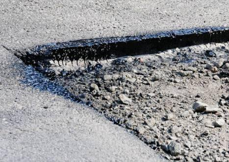
- Patching/Patch Repair Procedure:
- Pot holes or other defects in the road surface shall be cut to rectangular shape
- Excavate the area until sound materials encountered
- Clean area by removing dust and loose materials
- Apply prime/tack coat at side and
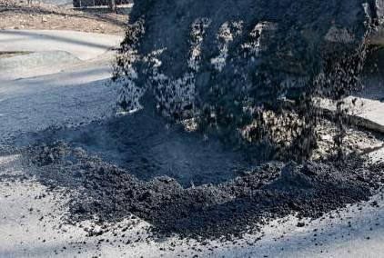
- Premix material is placed in layer of 6 cm quickly
- Patching/Patch Repair Procedure (Contd..)
- Compaction is carried out
- Patch repair should be slightly higher than old pavement
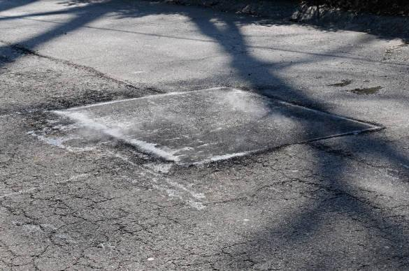
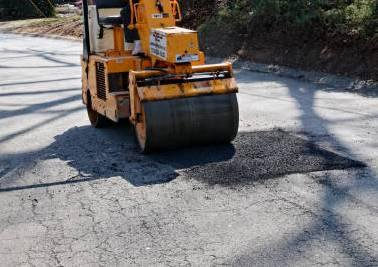
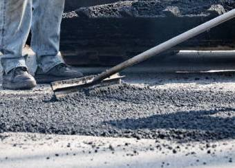
- Surface Treatment
- Bleeding
- Corrected by application of blotting materials such as chips (10mm), sand etc., and rolling
- Cracks
- Bituminous surface treatment renewal coat.
- More than one layer of surface treatment may be necessary if surface is severely damaged
- Skidding surface
- Skidding occurs as a result of polishing of aggregate by wheel
- Bituminous surface treatment renewal coat
- Surface Treatment Procedure:
- Sweeping the surface area clean by broom/mechanical broom sweeper
- Mark out the area to be repaired in box shape
- Application of tack coat (0.5L/m2 )
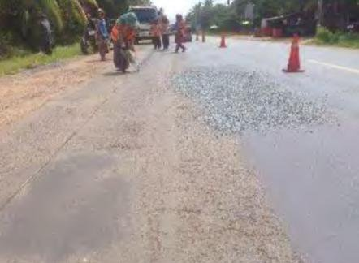
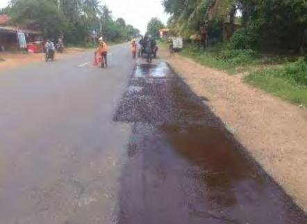
- Surface Treatment Procedure (Contd..):
- Spread the chips over the tack coat.
- For small area of the cracks, compacted with vibrating plate. And, for Large area use hand roller compactor
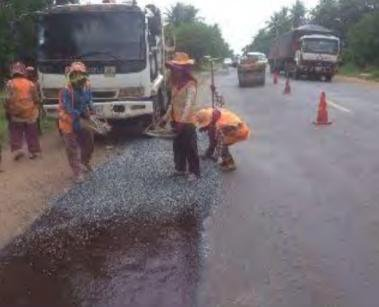
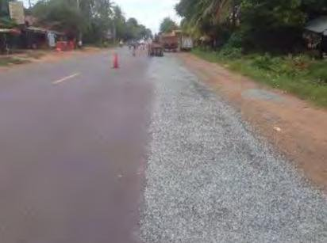
- Rut, Corrugation and Wave Repair
- Necessary to correct the defect such as excessive moisture, poor compaction etc in any pavement layers.
- If instability due to excessive moisture, suitable sub-surface drainage is necessary.
- If failure is due to improper compaction, it needs complete reconstruction
- Rut, Corrugation and Wave Repair Procedure:
- Marking out the area to be repaired
- Clean area to be repaired by using mechanical broom or hand broom.
- Spray tack coat (0.5 to 1L/m2) and spread aggregate 19mm.
- Compaction using rammer or vibrating plate compactor.
- Apply binder over the surface
- Distribution of aggregate 12mm scattered by shovel from the truck or trailer
- Compaction using rammer or vibrating plate compactor
- Resurfacing
- If pavement surface is totally worn out and develops poor riding surface, additional surface course is provided on the existing surface
- If thickness is inadequate, overlay of adequate thickness should be designed and constructed
Maintenance of Cement Concrete Roads
- Little maintenance is necessary
- Mainly maintenance of cracks, and maintenance of joints
- Maintenance of cracks are:
- Non structural Cracks : hair cracks, shrinkage cracks, warping cracks
- Structural Cracks : mostly appearance on the edge and corner regions due to load and warping stresses
- Maintenance of Non-Structural Cracks
- Hairline cracks are harmless. However, if widen, it allows infiltration of water
- They should be seal off to prevent entering of water
- The cracks are thoroughly cleaned using a sharp tool, stiff brush and air compressor
- Kerosene oil is applied for better bond
- The cracks are filled with bituminous seal
- Sealer is placed 3 mm above the level and layer of sand is spread over it for protection
- Maintenance of Structural Cracks
- Need immediate attention
- Cause of failure are investigated and remedial measures are taken
- For localized failure which may be due to settlement, recasting of slab is done
- General structural cracks, provide a flexible or rigid overlay
- Reconstruction of new flexible or rigid pavement if pavement is badly damaged
- Joint Maintenance
- Opened up joints are cleaned with brush or air compressor
- Refill the suitable sealer before start of the rain
- Replacing the filler and sealer materials
Maintenance of Mud Pumping
- Provide effective sub surface drainage
- Localized failure, patching of portion of slab (either concrete or asphalt)
- Mud jacketing & uplift of slab
- Drill number of holes about 5 cm diameter and about 1 to 3 m apart
- Grouting of 1:3 cement sand mix, cement soil, or bitumen under pressure
- Slabs are raised upto desired height by pressure
5.6 Pavement evaluation method2076
Past Exam Questions on this Topic
- Define pavement evaluation. Explain the types of failure and their causes in flexible pavement. [8] (2076 Chaitra, Q9)
Solution
(a) Pavement evaluation (definition and methods)
Pavement evaluation = assessing the existing condition of a pavement so that maintenance and strengthening works can be planned in time. It covers the subgrade support, the pavement composition and thickness, the present traffic loading and the environment, and is carried out in two ways:
1. Structural evaluation — is the pavement structurally capable of carrying the design traffic?
- Measured through surface deflection (Benkelman beam under a standard 8.2 t axle, falling weight deflectometer), and through stresses/strains at critical points.
- Layer thicknesses (test pits) and material properties (CBR, resilient modulus) are also determined.
- The measured deflection is used directly to design the strengthening overlay.
2. Functional (surface condition) evaluation — is the ride quality acceptable?
- Present Serviceability Index (PSI) — AASHTO index (0-5) from measured roughness, rut depth, cracking and patching.
- Surface Distress Index (SDI) — a 6-level rating (0 = no visible defect, 5 = maximum defects) obtained from a visual distress survey; used to plan periodic maintenance.
- International Roughness Index (IRI) — measured with a profilometer / bump integrator; quantifies the irregularity of the longitudinal profile.
- Skid resistance — portable skid-resistance tester, sand-patch texture depth.
(b) Types of failure in flexible pavement and their causes
Common failures of flexible pavement, their causes and remedies
Failure Description & cause Remedy Alligator (map) cracking A series of interconnected cracks. Cause: fatigue under repeated loading, localised weakness in the base course, poor drainage Structural failure — the only solution is a full-depth patch Rutting Channelised depressions along the wheel path. Cause: consolidation and lateral movement of any pavement layer, insufficient thickness, inadequate compaction Overlay for minor rutting; full-depth removal and replacement for severe rutting Longitudinal cracking Cracks parallel to the centre line. Cause: moisture infiltration, differential volume change, frost action, poor joint construction Crack < 12 mm — seal; severe — remove the cracked layer and overlay Reflection cracking Cracks in a flexible overlay directly over the joints/cracks of the old rigid pavement. Cause: movement of the underlying slab from thermal and moisture change Seal cracks < 12 mm; otherwise remove the cracked layer and overlay (with a stress-absorbing membrane) Pot-holes Bowl-shaped holes penetrating up to the base course. Cause: moisture infiltration, and the end result of untreated alligator cracking Full-depth replacement patch Corrugation and shoving Transverse ripples / a bulge of the surface. Cause: unstable mix (excess binder or fines), lack of aggregate interlock, braking and accelerating traffic Remove and replace the unstable surfacing; scarify and relay Ravelling / stripping Progressive loss of aggregate from the surface. Cause: insufficient binder, poor adhesion (stripping in the presence of water), laying in cold or wet weather Fog seal / surface dressing; remove and relay if deep Bleeding A film of binder on the surface. Cause: excess bitumen in the mix or in the prime/tack coat, low air voids, high temperature Blot with hot sand/aggregate and roll; for severe cases remove the surfacing Slippage cracking Crescent-shaped cracks. Cause: the surfacing is not bonded to the layer below (missing/poor tack coat) or a low-strength surface mix Remove the affected area and relay with a proper tack coat Edge cracking / failure Cracks and break-up near the pavement edge. Cause: lack of lateral support from the shoulder, poor edge drainage Repair the shoulder, provide edge drainage, seal the crack or patch Polished aggregate Loss of surface texture and skid resistance. Cause: soft aggregate polished by traffic Surface dressing or a thin friction course General causes can be grouped as: (i) failure of the subgrade — inadequate stability, excessive moisture, excessive stress, poor compaction; (ii) failure of the base or sub-base — inadequate stability or strength, loss of binding action, loss of base material, inferior materials, lack of lateral confinement; and (iii) failure of the wearing course — improper mix design, poor quality control, volatilisation and oxidation of the bitumen.
Lecture 24 §5.6 and §5.3; Manual.pdf Ch.4 §4.3 and §4.4.
Evaluation of Pavement Distress and Pavement Condition
- Assess the existing conditions and find out pavement service condition so that the maintenance and strengthening works can be planned on time.
- It covers a thorough study of various factors such as:
- Sub grade support
- Pavement composition and its thickness
- Present traffic loading
- Environmental conditions
- The method of pavement evaluation:
- Structural evaluation of pavements
- Evaluation of pavement surface condition (Functional Evaluation)
Structural Evaluation of Pavements
- Structural condition is concerned with the structural capacity of the pavement i.e. whether the pavement is structurally capable for design traffic, and climatic condition.
- Structural capacity measured by deflection, stresses, strain at critical points in pavement layers under the application of load. Also layer thickness, and material properties are also studied
- Benkelman beam is commonly used, where deflection of pavement under standard load of 8.2 ton is used to find pavement overlay thickness.
Evaluation of Pavement Surface
- Concerned with the ride quality or surface texture of a highway section
- Pavement may be evaluated by the raveling, ruts, patches , cracks and surface roughness
- Evaluated by:
- Present serviceability Index (PSI)
- Surface Distress Index (SDI)
- International roughness index (IRI),
- Skid resistance etc
- AASHTO has used present serviceability index to evaluate the pavement by measurement of permanent deformation, riding quality, and the extent of cracking and patching.
- Surface Distress Index(SDI) is a 6 level rating index from 0 to 5, which is derived from visual pavement distress survey. The rating 0 indicates no visual defects, whereas 5 indicates maximum defects. It is used for planning periodic maintenance activities
- Road roughness is the irregularities in the pavement surface affecting user comfort and safety due to variations in horizontal, veridical, and transverse profiles. Profilometer is a measuring instrument used to quantify its roughness as IRI.
5.7 Overlay and its types
Strengthening of Existing Pavements
- After maintenance, pavement should have adequate stability to withstand the design traffic under prevailing climate and sub grade conditions
- If the pavement have to support increased wheel loads and more load repetitions, strengthening of the existing pavement is required.
- Strengthening requires additional thickness of pavement , which is called overlay.
Overlay
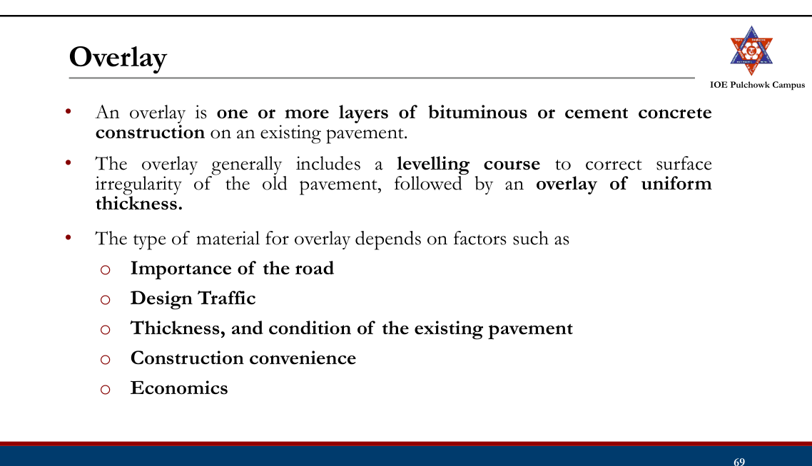
Types of Overlay
S.No. Existing Pavement Overlay
- Flexible Flexible
- Flexible Rigid
- Rigid Flexible
- Rigid Rigid
Flexible Overlay Over Flexible Pavement
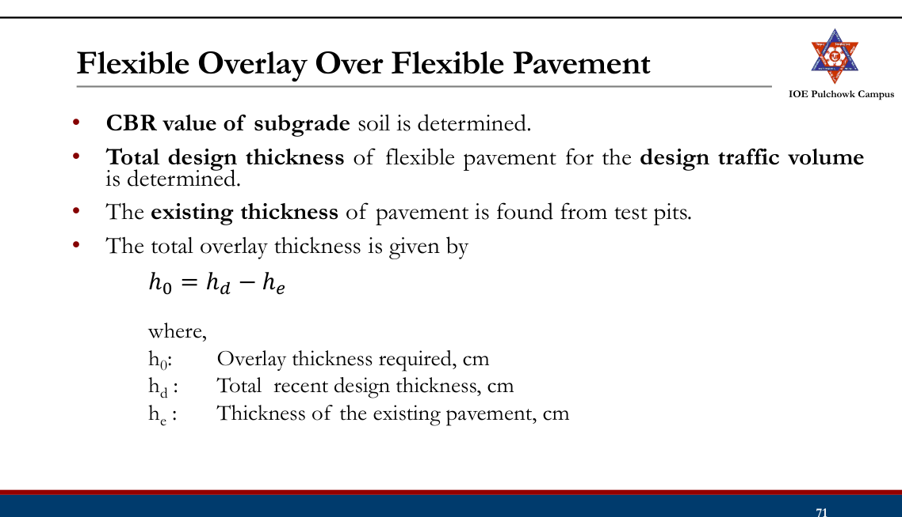
Rigid Overlay Over Rigid Pavement
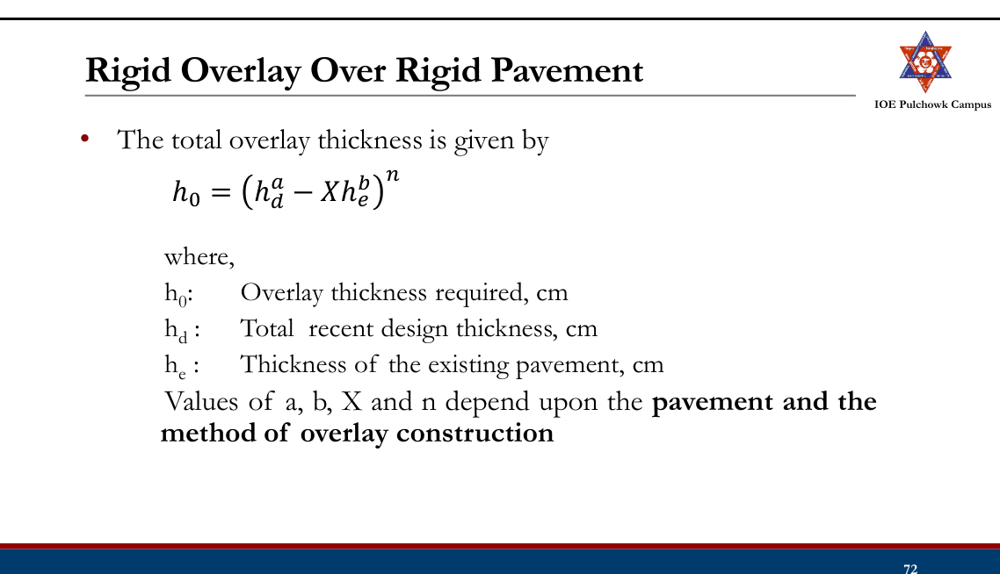
Rigid Overlay Design Factors
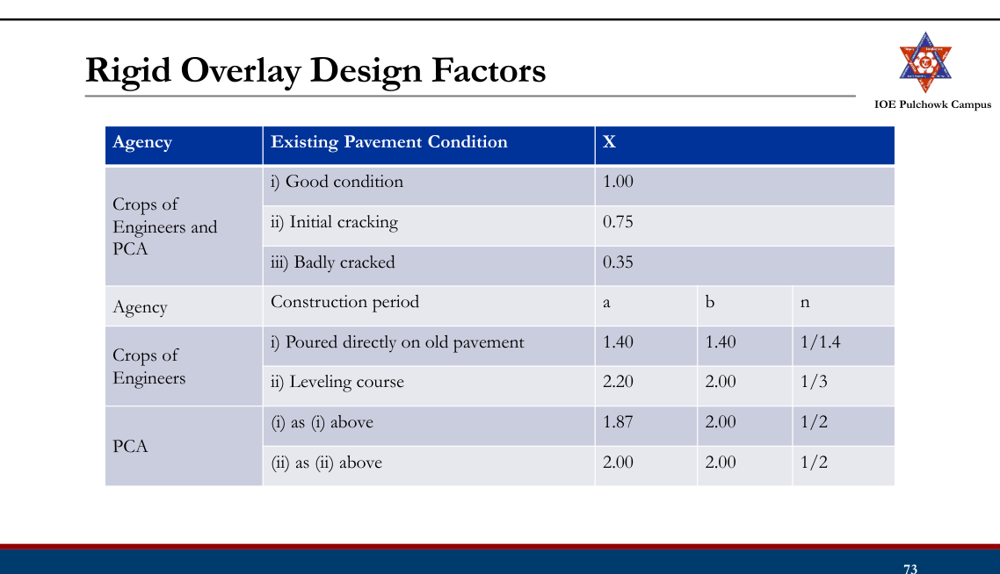
Flexible Overlay Over Rigid Pavement
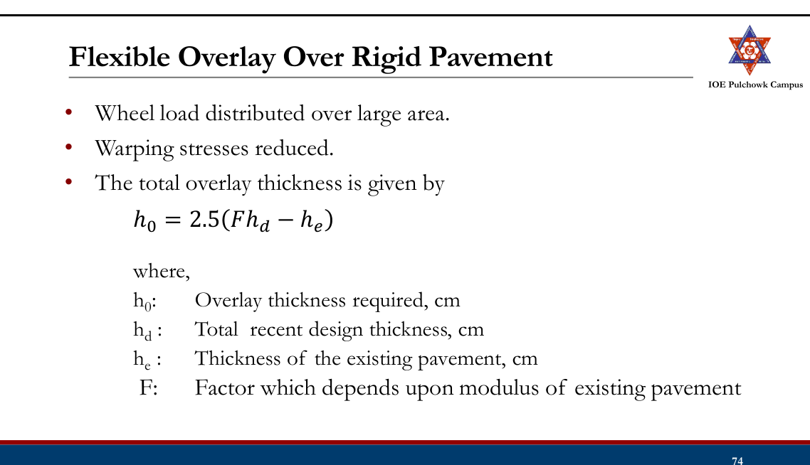
Rigid Overlay Over Flexible Pavement
- The plate bearing test is conducted on the existing flexible pavement and K value is obtained.
- The thickness of rigid overlay is calculated by using design criteria for rigid pavements
5.8 IRC method of overlay design for flexible pavement20822081
Past Exam Questions on this Topic
- Benkelman beam deflection studies were carried out on 15 selected points on stretch of flexible pavement during summer season using a dual wheel load of 4085 kg, 5.6 kg/cm² pressure. The deflection values obtained in mm after making the necessary lag corrections are given below. If the present traffic consists of 750 CVPD, determine the thickness of bituminous overlay required, if the pavement temperature during the test was 30°C and the correction factor for subsequent increase in subgrade moisture content is 1.3. Assume annual rate of growth of traffic as 7.5%. [4+4] (2082 Bhadra, Q9)
Solution
Benkelman-beam study during the summer season with a dual wheel load of 4085 kg at 5.6 kg/cm² (the standard 8.2 t rear axle) · dial-gauge readings in divisions of 0.01 mm at 10 locations, as tabulated with the question · present traffic 750 CVPD · pavement temperature during the test 30°C · correction factor for the subsequent increase in subgrade moisture = 1.3 · traffic growth rate 7.5%The paper says 15 points but lists 10. The design life of the overlay is not stated — take the usual n = 10 years; VDF = 3.5 for 150-1500 cvpd in plain/rolling terrain (IRC-37) and LDF = 0.75 for a two-lane single carriageway.
Rebound deflection at each point
with D₀, Di, Df in divisions of 0.01 mm: (Di − Df) ≤ 2.5 div : D = 0.02(D₀ − Df) (Di − Df) > 2.5 div : D = 0.02(D₀ − Df) + 0.0582(Di − Df)Loc. D0 Di Df Di−Df Formula used D (mm) 1 145 84 82 2 0.02(145−82) 1.260 2 125 88 85 3 0.02(40)+0.0582(3) 0.975 3 115 75 73 2 0.02(42) 0.840 4 114 81 78 3 0.02(36)+0.0582(3) 0.895 5 137 100 100 0 0.02(37) 0.740 6 130 69 65 4 0.02(65)+0.0582(4) 1.533 7 103 64 62 2 0.02(41) 0.820 8 112 60 58 2 0.02(54) 1.080 9 111 52 50 2 0.02(61) 1.220 10 95 35 26 9 0.02(69)+0.0582(9) 1.904 Mean and standard deviation
ΣD = 11.266 mm mean D̄ = 11.266 / 10 = 1.127 mm s = √[Σ(D − D̄)²/(n − 1)] = √(1.2003/9) = 0.365 mmCharacteristic deflection
traffic = 750 CVPD < 1500 CVPD → use D̄ + s Dc = 1.127 + 0.365 = 1.492 mmTemperature correction
test temperature 30°C = 5°C below the standard 35°C correction = +0.01 mm per °C Dc = 1.492 + 0.01 × 5 = 1.542 mmCorrection for seasonal / subgrade-moisture variation
given correction factor = 1.3 Dc,corrected = 1.542 × 1.3 = 2.00 mmDesign traffic in million standard axles
growth factor = [(1.075)10 − 1]/0.075 = (2.0610 − 1)/0.075 = 14.147 Ns = 365 × A × growth factor × LDF × VDF = 365 × 750 × 14.147 × 0.75 × 3.5 = 1.02 × 10⁷ = ≈ 10 msaOverlay thickness from the IRC:81 design chart
Entering the chart with a characteristic deflection of 2.0 mm and the 10 msa curve:
thickness of bituminous macadam overlay = ≈ 230 mmEquivalent thickness if another material is used
1 cm BM ≡ 0.7 cm DBM/AC/SDBC : 230 × 0.7 = ≈ 160 mm 1 cm BM ≡ 1.5 cm WBM/WMM : 230 × 1.5 = ≈ 345 mmProvide a strengthening overlay of about 230 mm of bituminous macadam — in practice, say 160 mm of DBM plus a 40 mm bituminous-concrete wearing course.Deflection formulae, the characteristic-deflection rule, the temperature and seasonal corrections, the design-traffic equation and the thickness chart (with the BM ≡ 0.7 DBM / 1.5 WBM equivalences) are all from §5.8 of these notes (Lecture 24, IRC:81) and Manual.pdf Ch.4 §4.6, book p.240.
- Write down the process of overlay design of pavement by Benkelman beam Deflection Method. [8] (2081 Bhadra, Q9)
Solution
Deflection (Benkelman beam) approach of overlay design — IRC:81
- Principle. The structural strength of an existing flexible pavement is judged from the rebound deflection of its surface under a standard rear axle of 8.2 t (dual wheels, 5.6 kg/cm² tyre pressure). A larger deflection means a weaker pavement/subgrade; the overlay must be thick enough to bring the deflection down to a tolerable value.
- Field measurement. The Benkelman beam probe is inserted between the dual wheels; the initial dial reading D0 is taken, the truck is driven forward 2.7 m (intermediate reading Di) and then 9 m away (final reading Df). At least 10 points per section per lane, with a minimum of 20 points per km. If the highest or lowest value differs from the mean by more than one-third of the mean, extra readings are taken 25 m either side.
- Rebound deflection of each point (readings in divisions of 0.01 mm):if (Di − Df) ≤ 0.025 mm : D = 2(D0 − Df) × 0.01 mm if (Di − Df) > 0.025 mm : D = [2(D0 − Df) + 2×2.91(Di − Df)] × 0.01 mm
- Other data — pavement temperature at hourly intervals, field moisture content of the subgrade, subgrade soil classification, average annual rainfall, traffic volume, growth rate and axle-load (VDF) data.
- Characteristic deflection Dc = D̄ + s for roads with fewer than 1500 commercial vehicles per day, and D̄ + 2s for National and State Highways (D̄ = mean, s = standard deviation of the individual deflections).
- Corrections — (a) temperature: +0.01 mm per °C when the pavement temperature during the test is below 35°C and −0.01 mm per °C when it is above 35°C; (b) seasonal / moisture: a correction factor depending on the subgrade soil type (sandy-gravelly, clayey with PI < 15, clayey with PI > 15), the field moisture content at the time of the test and the average annual rainfall (< or > 1300 mm).
- Design traffic in million standard axles:Ns = 365 × A × [((1+r)ⁿ − 1)/r] × LDF × VDF
- Overlay thickness is read from the IRC:81 design chart (corrected characteristic deflection on the x-axis, cumulative standard axles as the family of curves) which gives the thickness of bituminous macadam. If other materials are used:1 cm BM ≡ 1.5 cm WBM / WMM / BUSG 1 cm BM ≡ 0.7 cm DBM / AC / SDBC
Lecture 24 §5.8 — IRC:81 method of overlay design for flexible pavement; Manual.pdf Ch.4 §4.6.
Deflection Approach of Overlay Design
- The structural strength of pavement is assessed by measuring surface deflections under a standard axle load (8.2 ton)
- Larger pavement deflections imply weaker pavement and subgrade
- The overlay must be thick enough to reduce the deflection to a tolerable amount.
- Rebound deflections are measured with the help of a Benkelman Beam.
Benkelman Beam
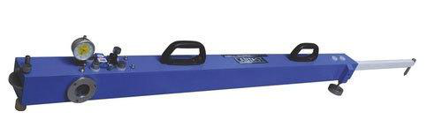
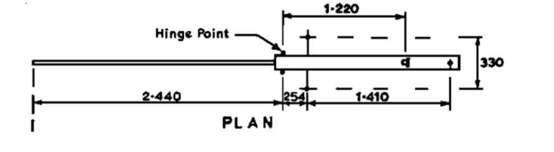
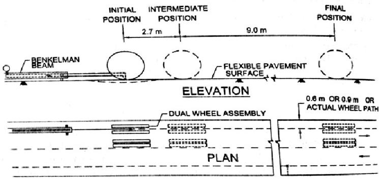
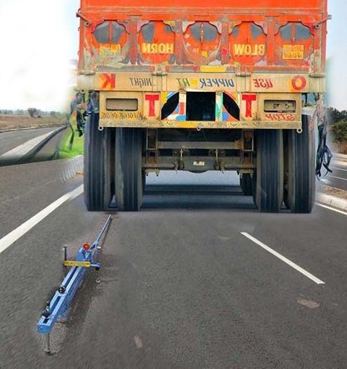
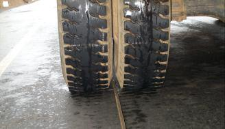
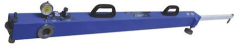
Loading and Other Standards
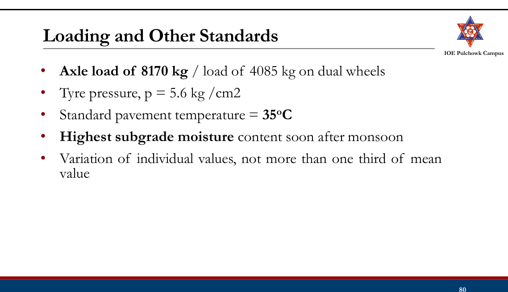
Number of Deflection Measurements
- At least 10 deflection measurements are made each section per lane subject to a minimum of 20 measurements per km.
- If the highest or the lowest deflection values for the section differ from the mean by more than one-third of the mean, then extra deflection measurement should be made at 25 m on either side of point where high or low values are observed.
Other Data Required
- Measurement of pavement temperature (at one hour intervals).
- Measurement of field moisture content of subgrade soil.
- Typical subgrade soil samples for lab tests (soil classification)
- Annual rain fall.
- Traffic data, growth rate, axle load data, VDF values
Analysis of Data
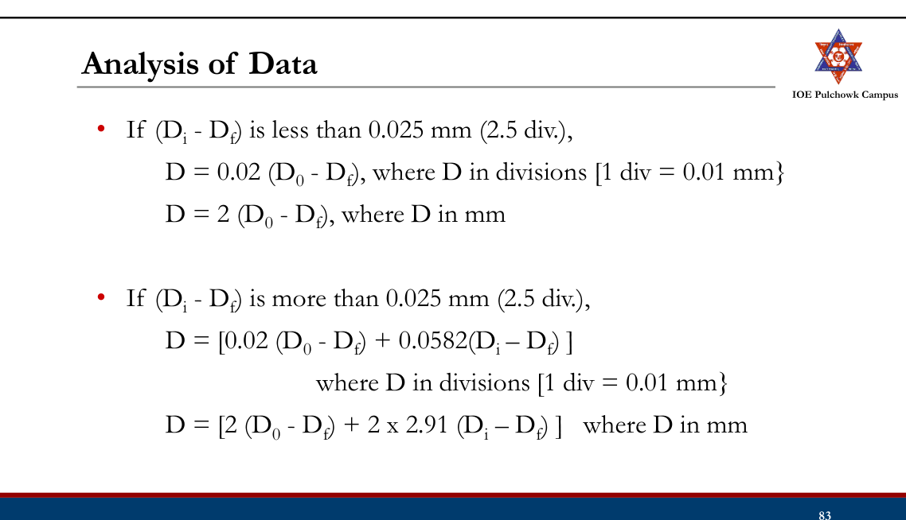
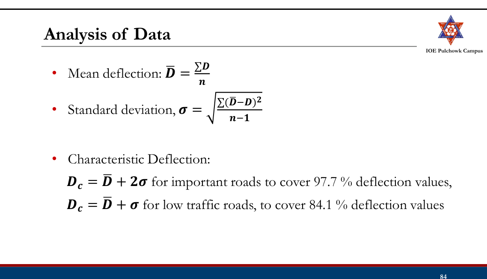
Correction for Temperature
- Temperature correction factor + 0.01 mm per oC for pavement temperature below 35oC and - 0.01 mm per oC for pavement temperature above 35oC
Correction for Seasonal Variation
- Correction for seasonal variation depends on type of soil subgrade (sandy/gravelly or Clayey with PI<15 or Clayey with PI>15), field moisture content, average annual rain fall (<1300 mm or >1300 mm)
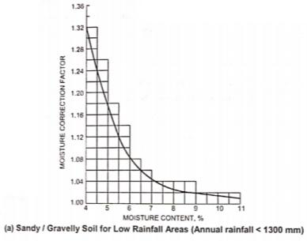
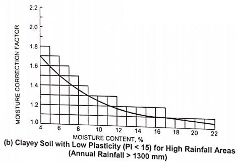
Design Traffic
Thickness Design Chart
Overlay Design
5.9 Concept of performance based maintenance
Performance Based Maintenance
- In traditional maintenance contracts, road agency specifies the maintenance methods, materials, quantities, technologies, and time of work, and the contractor is paid based on the quantity of work or inputs used.
- In performance-based maintenance contract (PBC), the road agency specifies the required condition or performance level of the road, and the contractor is paid based on whether the specified performance standards are achieved.
- PBC in general is long-term agreement between the road agency and private contractor.
- Encourages preventive and timely maintenance.
- Transfers more responsibility and risk to the contractors. However, the higher risk can also provide opportunities for higher profit.
Practice Tasks from the Lecture
- Review activities and techniques used in road construction
- Tools, equipment and plants used in road construction